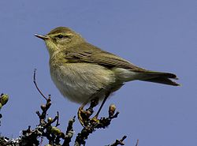
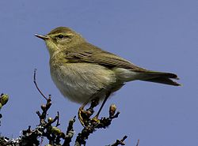

| Willow Warbler | |
|---|---|
|  | |
| Conservation status | |
| Binomial name | |
| Phylloscopus trochilus (Linnaeus, 1758) |
| Willow Warbler | |
|---|---|
|  | |
| Conservation status | |
| Binomial name | |
| Phylloscopus trochilus (Linnaeus, 1758) |
The Willow Warbler (Phylloscopus trochilus) is a very common and widespread leaf warbler which breeds throughout northern and temperate Europe and Asia, from Ireland east to the Anadyr River basin in eastern Siberia. It is strongly migratory, with almost all of the population wintering in sub-Saharan Africa.[2][3]
It is a bird of open woodlands with trees and ground cover for nesting, including most importantly birch, alder, and willow habitats. The nest is usually built in close contact with the ground, often in low vegetation. Like most Old World warblers, this small passerine is insectivorous.[3] In northern Europe, it is one of the first warblers to return in the spring though is later than the closely related Chiffchaff Phylloscopus collybita.[3]

{kind=link}